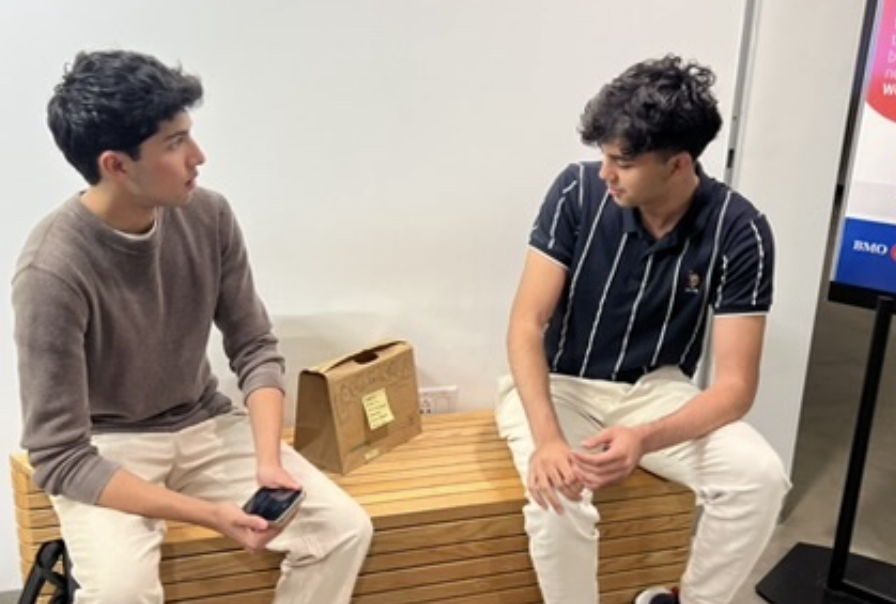
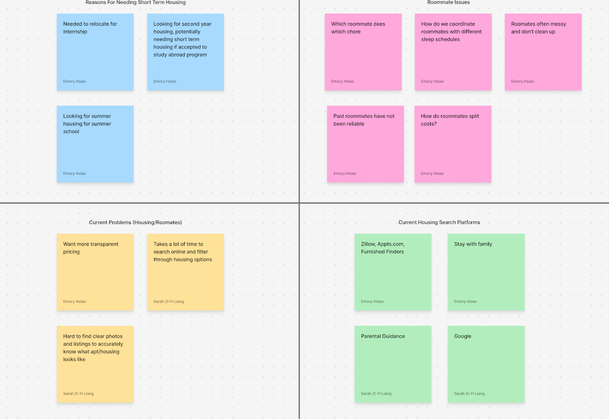
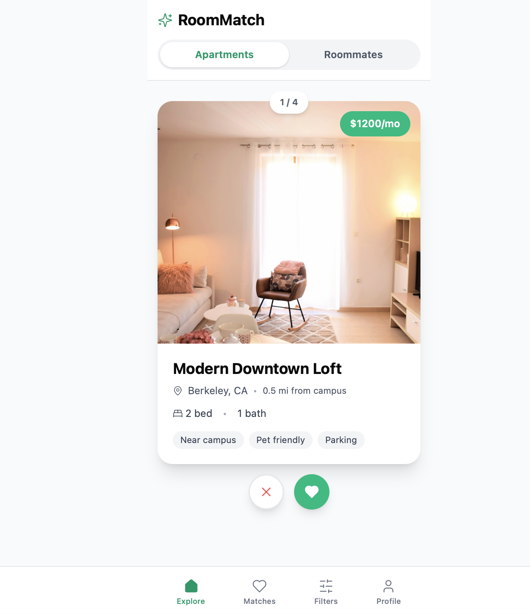
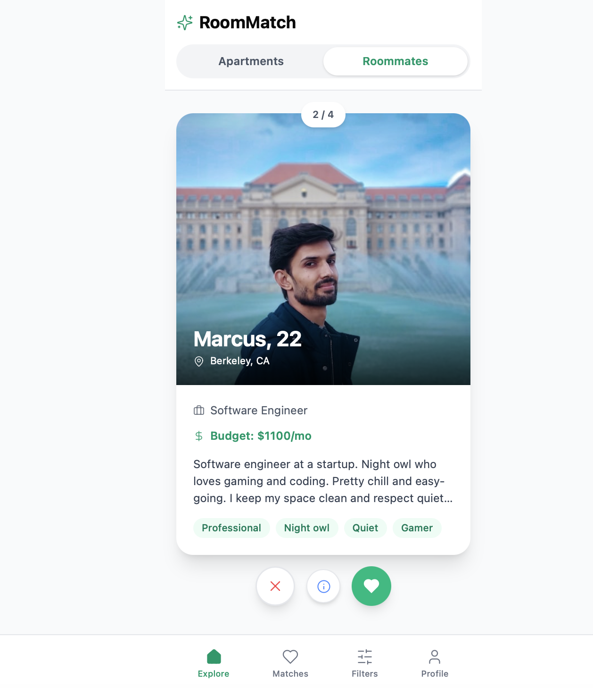
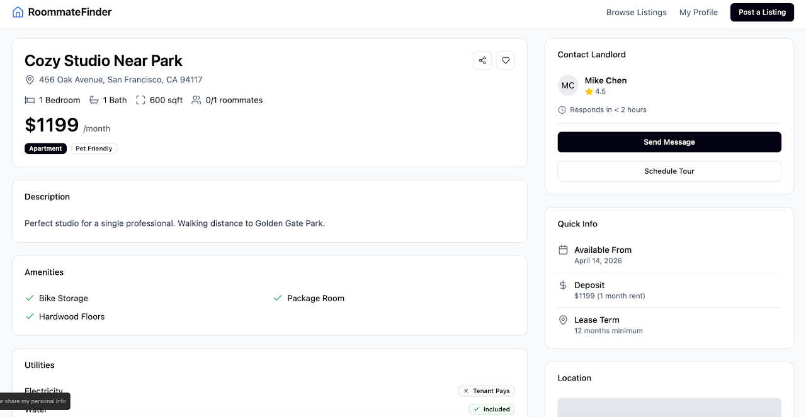
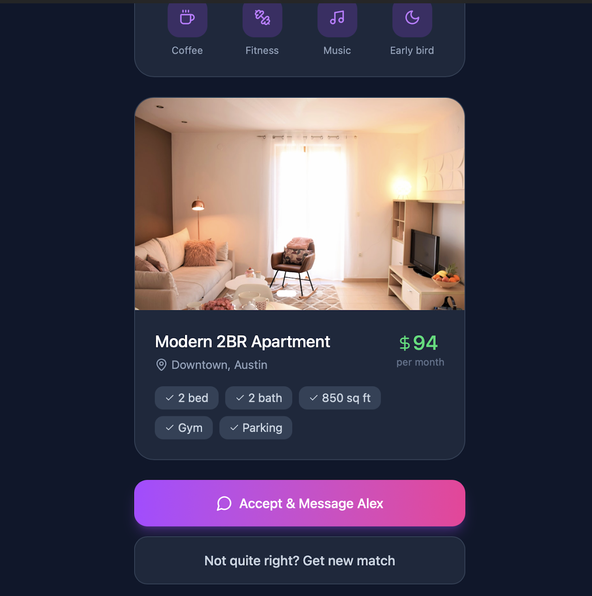
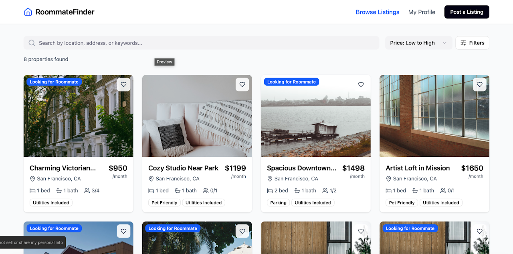
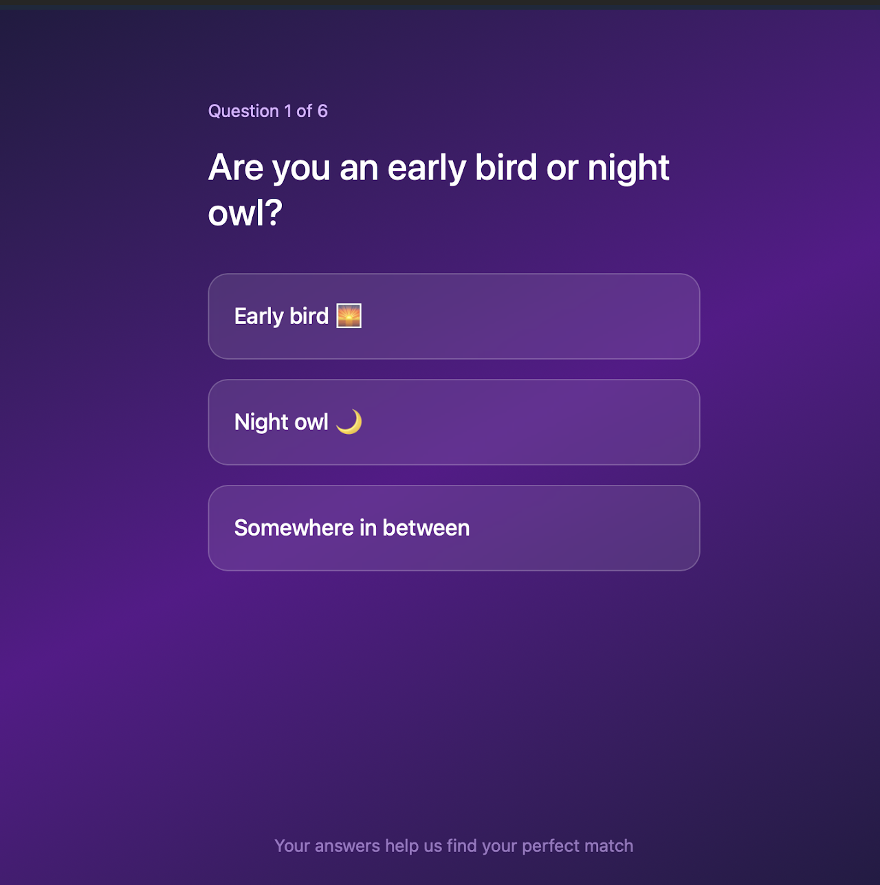

Case Study — Room Match
Housing search shouldn’t take five tabs and a leap of faith.
Room Match centralizes housing and roommate discovery into a single swipe-based experience — designed and user-tested as a product design project at UC Berkeley (DES INV 15).
00 — Overview
A centralized way to find housing and roommates together.
College students relocating for internships, research, or study abroad need housing fast, in cities they don’t know, often with roommates they’ve never met. Today that search is scattered across Craigslist, Facebook groups, Zillow, and word of mouth — with no single place to evaluate a listing and the people who’d come with it.
Room Match explores a single swipe-based platform for discovering both at once. As one of five designers on the team, I led the high-fidelity visual design, layout, and UX of the prototypes that went into user testing.
01 — The Problem
Fragmented search. Trust-heavy decisions.
Short-term housing sits in an awkward gap: too long for Airbnb, too short for a standard lease, and too unfamiliar a city to know who or what to trust. Eighty-eight percent of interns are asked to relocate in some capacity — most without a centralized way to do it.
Current Experience
—Craigslist & Facebook groups
—Zillow, Apartments.com, Furnished Finders
—Word of mouth, friends-of-friends
—Roommates picked sight-unseen
—No way to verify a listing or a person
Room Match
✓Centralized, aggregated listings
✓Roommate profiles alongside listings
✓Compatibility & preference matching
✓Trust signals before you commit
✓One place to discover both
02 — Research
Five interviews, one recurring theme: trust.
We started assuming the search experience needed to feel easier and more fun. Testing said otherwise — this section is as much about that assumption breaking as it is about the interviews themselves.
We interviewed college students (ages 18–21, freshman through senior) who had searched for short-term housing or roommates before — for internships, study abroad, or summer programs.

Needfinding interview in progress

Affinity mapping across four themes
FINDINGListings are scattered. Every participant used 2–4 different platforms just to start looking.
FINDINGTotal cost isn’t transparent. Fees beyond rent routinely pushed people over budget after the fact.
FINDINGRoommates are a gamble. Several had moved in with near-strangers and regretted it within weeks.
FINDINGVerification is missing. No consistent way to confirm a listing — or a person — was legitimate.
“If you had a magic wand, what tool would you want? — A website with all the links to every housing option for students, specifically.”
Needfinding interview, freshman participant
Usability Testing — Three Prototypes
We carried a swipe interface, a listings website, and a blind-matching concept to hi-fi and tested all three with the same participants. The interface people enjoyed most was not the one they trusted most — and that contradiction became the most useful finding of the project.
What Users Enjoyed
—Swipe interaction
—Lightweight browsing
—Playful discovery
—Fast scanning
What Users Trusted
✓Detailed listings
✓Verification signals
✓Transparent costs
✓Roommate information & control
For low-stakes browsing, delight mattered. For an actual housing decision, confidence mattered more — participants said they’d gladly spend more time browsing if it meant feeling more sure.
LIKED ≠ TRUSTED
The interface people liked most was not the interface they would use to make a real decision. Fun interfaces are not always the trustworthy ones — especially when the decision is who you live with.
“Swiping was fun but felt risky… I needed more info before reaching out.”
Usability test participant
03 — Key Insight
Finding housing is not just a search problem.
It is a people-matching problem.
Every existing platform optimized for listings. None of them treated the roommate — the person you’d actually be living with — as a first-class part of the decision. That gap became the center of the design.
04 — Product Strategy
Why a swipe-based model made sense to test.
Housing decisions are high-stakes, but the early browsing stage doesn’t have to feel that way. A lightweight, swipe-based interaction was our hypothesis for lowering the activation energy of getting started.
01Fast scanning. See more options in less time than scrolling a listings page.
02Lightweight decisions. A swipe is reversible and low-pressure — unlike a lease.
03Preference learning. Each swipe sharpens what gets shown next.
04Less decision overload. One card at a time instead of a wall of listings.
05Less intimidating. Browsing roommates feels more like discovery, less like a transaction.
05 — User Flow
From profile to move-in.
→
→
Browse Listings / Roommates
→
→
→
→
06 — Core Experience
The moments that mattered most.
We carried three different interaction models all the way to hi-fi so we could test them against each other, not just talk about them.

Swipe — Apartments
Photo, price, distance to campus, and quick tags — swipe to save or pass.

Swipe — Roommates
Budget, lifestyle tags, and a short bio — the same interaction, applied to people.

Listing Detail
Amenities, lease terms, and a landlord contact card — the trust layer a swipe alone can’t carry.

Match Reveal
A reveal moment explored in an early concept — accept and message, or request another match.
Chat and in-person tour coordination were scoped and recommended from testing, but not carried to hi-fi within the project timeline.
07 — Design Decisions
What we chose, and what it cost us.
Decision
Swipe interaction
Why it mattered
Fastest, most enjoyable way to browse — testers called it “fun” and “intuitive” without prompting.
Tradeoff
Enjoyable, but on its own it didn’t give people enough information to trust a decision this big.
Decision
Centralized listings
Why it mattered
Every participant was already juggling 2–4 separate platforms just to start a search.
Tradeoff
Aggregation makes us dependent on the quality and freshness of listing data we don’t control.
Decision
Roommate profiles & compatibility
Why it mattered
Needfinding showed people care as much about who they live with as where they live.
Tradeoff
Self-reported traits aren’t verified — compatibility on paper can still mismatch in person.
Decision
Trust & verification signals
Why it mattered
The single strongest testing finding: people trusted whichever prototype showed the most detail.
Tradeoff
More detail to review and fill out raises the effort required from both sides of the platform.
Rejected
Fully automated matching
Why it mattered
Tested as a “blind date for housing” concept — removed search and decision fatigue entirely.
Tradeoff
Every single tester rejected it. Removing control over a decision this personal felt riskier, not easier.
08 — Final Screens
Three tested directions, not one obvious winner.
Rather than commit early, we carried all three directions to hi-fi and let usability testing — not opinion — decide what survived.
What worked
Fast, fun, intuitive — the easiest concept to pick up with no explanation.
What failed
Felt too casual for a decision this high-stakes — not enough information to act on.
02
Listing-First Interface
What worked
More familiar, more credible, far more information-rich.
What failed
Less novel, less delightful — functionally similar to what already exists.
What worked
Removed search and decision effort almost entirely.
What failed
Removed too much control — every tester said it felt riskier, not easier.
The final direction needed to combine the speed of discovery with the trust of detailed information.
01 Swipe-Based — Apartments
Tinder-style swipe browsing for listings.
01 Swipe-Based — Roommates
The same swipe model, applied to people.

02 Listing-First
A familiar, listings-first website model.
02 Listing-First — Detail
The detail and trust signals testers rated highest.

03 Blind Match — Quiz
A short quiz feeding an automated match.
03 Blind Match — Reveal
The concept every tester ultimately rejected.
Final Interactive Prototype
See the combined direction in motion.
A Figma Make prototype exploring centralized housing and roommate discovery.
Open Prototype →
09 — Reflection
What this project changed about how I think.
We started assuming engagement was the problem to solve — that housing search needed to be more fun. Testing told us something more uncomfortable: people wanted fun for browsing, but trust for deciding, and no amount of delight substitutes for missing information when the decision is this personal.
Carrying three real directions to hi-fi instead of one, and letting usability testing — not our own preference — choose between them, was the most useful discipline of the project. The strongest idea on paper (full automation) was also the one every single tester rejected.
If we ran it again, we’d test with a wider, less Berkeley-specific group before drawing conclusions this firm. Marketplace problems like this one are rarely about adding a feature — they’re about earning enough trust that someone’s willing to make a real decision inside your product.